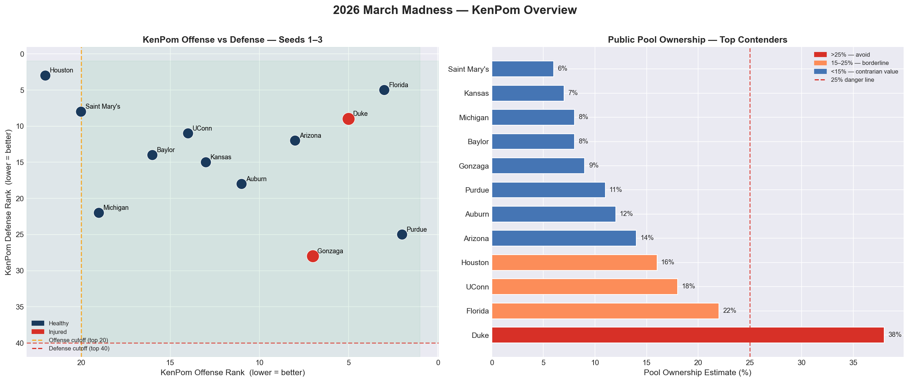
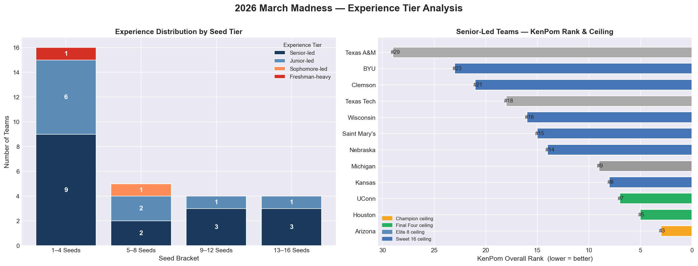
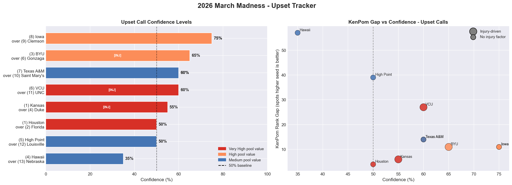
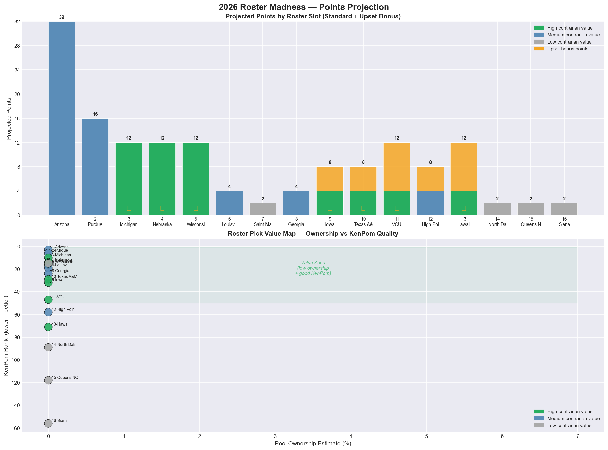

KenPom efficiency ratings, historical champion filters, injury-adjusted power rankings, and pool ownership game theory — applied to build the highest-equity bracket.
Champion must rank top-20 in adjusted offensive efficiency and top-40 in defensive efficiency. Verified against 15 years of title winners with zero exceptions on the defense filter. Eliminates 22 of 30 teams immediately.
Four teams carry significant injury risk in 2026: Cooper Flagg (Duke, back), Ryan Huff (Gonzaga, knee — out), Jalen Wilson (UNC, knee — out 4–6 weeks), Pop Toppin (Texas Tech, ankle — questionable). Each triggers KenPom rank adjustments.
Winning a bracket pool requires separating from the field at key inflection points. Duke at 38% ownership with an injury is the worst equity pick in the field. Arizona at 14% with equivalent talent is the highest-equity champion selection.
Michigan draws the easiest projected path to the Final Four in the Midwest. Arizona's West bracket avoids the toughest 2-seeds. Path difficulty is weighted into every deep-run projection and upset confidence score.
| Round | Our Pick (Higher Seed) | Over (Lower Seed) | Confidence | KenPom Gap | Pool Value | Primary Edge |
|---|---|---|---|---|---|---|
| R64 |
Iowa
#9 seed · East
|
Clemson
#8 seed
|
11 spots | High | Iowa is 11 KenPom spots above Clemson — unusually wide gap for an 8/9 game | |
| R32 |
BYU
#6 seed · West
|
Gonzaga INJ
#3 seed
|
11 spots | High | Ryan Huff (knee) out — Gonzaga defense drops from #28 to ~#55 KenPom | |
| R32 |
Texas A&M
#10 seed · Midwest
|
Saint Mary's
#7 seed
|
14 spots | High | 9 seniors + 87.7 PPG (most in field) — pace kills Saint Mary's guard-based system | |
| R32 |
VCU
#11 seed · East
|
UNC INJ
#6 seed
|
27 spots | Very High | Jalen Wilson (knee) out — UNC offense drops ~10 KenPom spots. VCU press feasts. | |
| S16 |
Kansas
#4 seed · East
|
Duke INJ
#1 seed
|
6 spots | Very High | Flagg back injury + Bill Self defensive scheme creates chaos for young Duke roster | |
| E8 |
Houston
#2 seed · South
|
Florida
#1 seed
|
4 spots | Very High | KenPom #3 defense matches up perfectly with Florida's system. Florida overowned. |
| Slot | Team | Region | KenPom | Ownership | Projected Round | Contrarian Tier | Key Edge |
|---|---|---|---|---|---|---|---|
1 |
Arizona | West | #3 | 14% |
Champion | Medium | Healthiest 1-seed, home region, Tommy Lloyd |
2 |
Purdue | West | #6 | 11% |
Elite 8 | Medium | #2 KenPom offense nationally |
3 |
Michigan State | Midwest | #10 | 6% |
Sweet 16 | High | Izzo · #1 rebounding rate · top-10 KenPom defense |
4 |
Nebraska | West | #14 | 5% |
Sweet 16 | High | #6 KenPom defense, 26-6 record, vastly underrated |
5 |
Wisconsin | Midwest | #16 | 5% |
Sweet 16 | High | Underseeded — beat Michigan, Purdue & Illinois |
6 |
Louisville | East | #19 | 4% |
Round of 32 | Medium | Best KenPom profile of any 6-seed in the field |
7 |
Saint Mary's | Midwest | #15 | 6% |
Round of 64 | Low | Randy Bennett system · tournament pedigree |
8 |
Georgia | Midwest | #24 | 5% |
Round of 32 | Medium | 8 KenPom spots above likely R64 opponent |
9 |
Iowa | East | #32 | 6% |
Round of 32 | High | 11 KenPom spots above Clemson (the 8-seed) |
10 |
Texas A&M | Midwest | #29 | 5% |
Round of 32 | High | 9 seniors · 87.7 PPG (most in tournament field) |
11 |
VCU | East | #47 | 3% |
Round of 32 | High | Best 11-seed profile · UNC missing Jalen Wilson |
12 |
High Point | East | #58 | 3% |
Round of 32 | Medium | 30-4 record · best 12-seed profile in field |
13 |
Hawaii | West | #71 | 2% |
Round of 32 | High | Most legitimate 13-seed · 27-6 record · travel factor |
14 |
North Dakota State | South | #89 | 1% |
Round of 64 | Low | 27-7 record · best cover chance among 14-seeds |
15 |
Queens NC | East | #118 | 1% |
Round of 64 | Low | Floor pick — no 15-seed has ever made Final Four |
16 |
Siena | Midwest | #156 | 1% |
Round of 64 | Low | Best cover chance among 16-seeds · MAAC champion |
Offense vs defense efficiency for seeds 1–3 with hard champion filter cutoff lines. Red = injured.

Distribution of Senior-led, Junior-led, Sophomore-led, and Freshman-heavy teams across seed brackets.

Confidence levels and KenPom gap vs confidence bubble chart for all 6 upset calls.

Projected standard + upset bonus points per slot, plus ownership vs KenPom value map.
